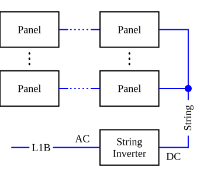
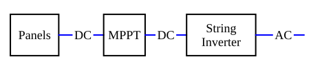

Serial configuration:
Parallel configuration:
Mixed configuration:
A string inverter converts the DC delivered from a string of PV panels into AC, which is then fed into the inhouse grid.

Panels are usually connected in series to obtain a string voltage that is well within the input voltage range of the inverter. Multiple serial strings can be connected to a single string inverter input, as long as
An MPP tracker sits between the PV Panels and the string inverter. The MPP tracker maximizes power draw from a PV panel string.

In practice, the MPPT is integrated into the string inverter, but in some modular concepts the MPPT is separate (Victron for example).
A PV panel is a non-linear, structured device. The maximum voltage is obtained when the outputs are open, i. e. at zero current, the maximum output current is obtained in a short-circuit condition where the output voltage is zero. Since , the output power in both situations is zero. The maximum output power is somewhere in between. The voltage-power curve develops a single peak.
The situation gets more complicated if the panel is illuminated unevenly. Since most PV panels are partitioned, the voltage-current curve of the panel becomes distorted, the voltage-power curve develops multiple peaks.
The situation gets even more complicated if multiple panels are connected in series and/or parallel.
An MPPT tries to find the highest power peak in that curve. This is a non-linear optimization task. There are several MPPT algorithms, the cheap and simple ones are a compromise and rarely yield the maximum power output. The most sophisticated algorithms use artificial intelligence or fuzzy logic.
An MPPT charge controller sits between the PV Panels and the battery. The panels are organized into strings, each string is controlled by an internal maximum power point tracker (MPPT) that maximizes power draw from that PV panel string to compensate shading effects on some or all panels.
A simple PWM is essentially a controlled switch that connects PV output periodically and directly to the battery:
Solar panel(s) → PWM → battery
The battery forces the solar panel output voltage down to the battery voltage, since its internal resistance is much lower than that of the solar panel(s). Therefore, a lot of voltage is wasted.
The maximum power point tracker (MPPT) with a DC output is essentially a DC-DC converter that continuously adjusts its operating point so that the solar panel(s) deliver the maximum possible power while providing a stable, regulated DC output to charge a battery or feed another DC load. The MPPT constantly samples PV voltage and current and calculates the DC power .
Since the MPP of solar cells depends on illumination level and temperature, the MPPT uses algorithms like "perturb and observe", "incremental conductance" to track that point in real time.
Inside a typical MPPT is usually a buck (step-down) or a buck-boost (step up/down) converter. The MPPT regulates the duty cycle of the converter. The output is tailored to the needs of the battery or the DC bus.
Examples: Charging a 12V battery from a 30…40 V panel, feeding a 48 V DC bus from a 100V PV string, supplying DC loads directly in telecom or off-grid systems, or provide a stable DC voltage for subsequent AC conversion.
Placement in the system:
PV panels → MPPT DC-DC → Battery
PV panels → MPPT DC-DC → DC Bus
Things to condider:
MPPTs work best if the panels have bypass diodes.
MPPTs work better with panels connected in series, they lover high voltages, conversion losses are lower.
MPPTs are essential:
This algorithm is easy to implement, works well in stable conditions and requires only low computational power. On the downside, the algorighm can oscillate around the MPP, or can get confused by sudden irradiance changes caused by passing clouds etc. Additionally, the algorithm may lock to a false peak under partial shading.
This method uses the slope of the power curve:
Since and both and are a function of , we have to apply the product rule and obtain
Ordering the terms yields
where is the incremental conductance, and is the instantaneous conductance.
This method is more accurage that P&O and handles irradiance changes better, and causes less oscillations around the MPP. On the other hand, the algorithm is more complex and requires more precise measurements.
This method assumes that the MPP voltage is fixed at 0.7…0.8 of the panel's open-circuit voltage. This method is very simple and exibits no oscillation. It is used in microcontrollers with very limited resources. The downside is that it is not suitable for serious harvesting because of its inaccuracy under changing conditions.
Monentarily disconnects the panel and measures the open circuit voltage, then reculates the output voltage to a fixed fraction (e. g. 0.76). This method is also very simple, slightly better than CV, but interrupts current flow and is still not very accurate.
A DC optimizer is combined with a single PV panel to perform panel-level power optimization for the inverter. It is essentially a mini-MPPT for each panel. Sometimes two panels are combined.
Arrangement:
Panel → DC optimizer → String Inverter
Graphically:
Multiple DC optimizers feed into a single inverter. Efficiency is slightly higher when compared to microinverters.
DC optimizers are useful for roofs with partial shading, panels facing different direcions, and in systems with multiple tilt angles.
The optimizer contains a step-up or step-down DC-DC converter and maintains a fixed voltage for the inverter, which prevents the inverter from dropping out during shading. This makes the inverter's job much easier.
Security features: A DC optimizer provides arc-fault detection and rapid shutdown capability, which is required in many countries. It reduces output voltage when the inverter is off.
A DC optimizer provides panel-level monitoring, such as power output per panel, temperatur, faults, shading patterns. This is incredibly useful for troubleshooting.
A microinverter is combined with a single PV panel. Its task is to track the panel's maximum power point (MPPT) and provide a fixed AC voltage to the PV system.
PV Panel → Microinverter → Inhouse Grid
Due to the increased complexity, microinverters are more expensive than DC optimizers.
Inputs: Solar PV DC via external MPPT, AC mains.
Ouput: 240V AC off-grid
Battery types: LiFePO4, 12/24/48 V stystem
These devices are designed for road vehicles, caravans, camping.
Inputs: Solar DC, alternator DC, AC mains
Ouput: 12 V DC
Battery types: 12 V system.
Use case: Road vehicles, marine.
Inputs: Solar PV panels, AC mains.
Ouput: 60 V
Battery types: LiFePO4 60 V
Use case: Larger battery banks, mobility systems